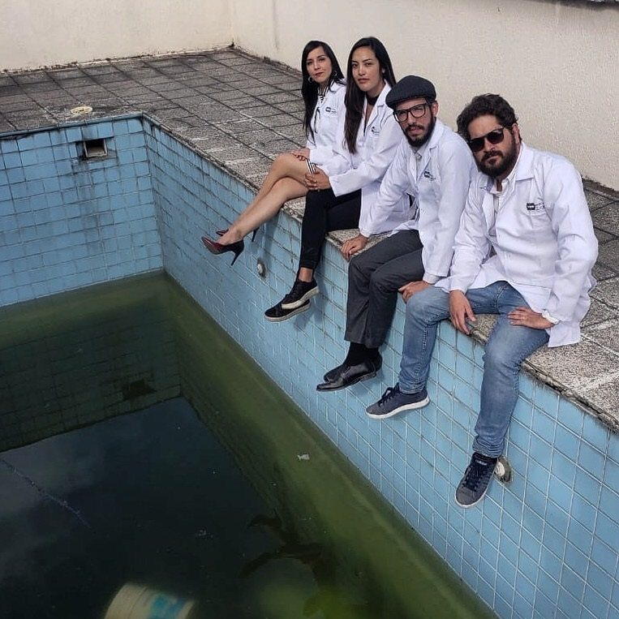
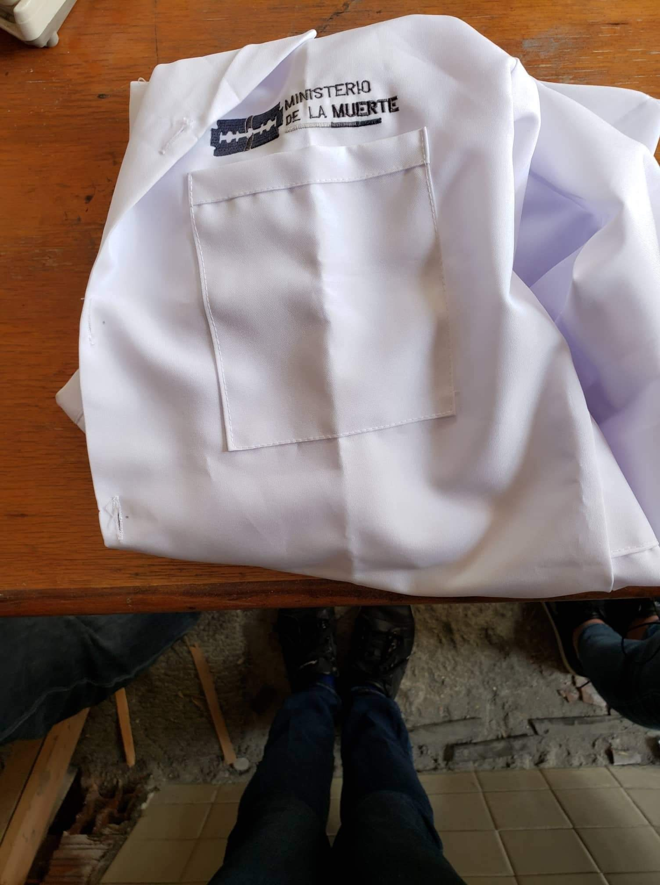
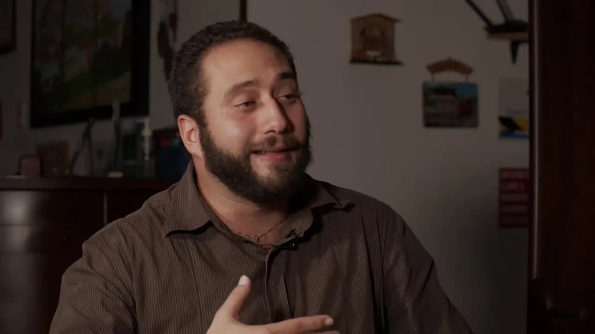
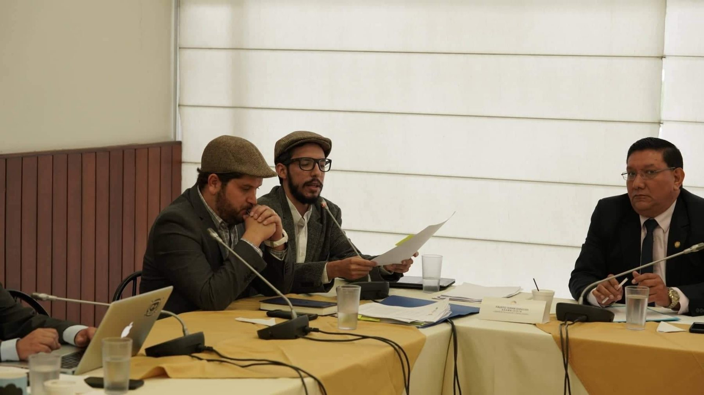
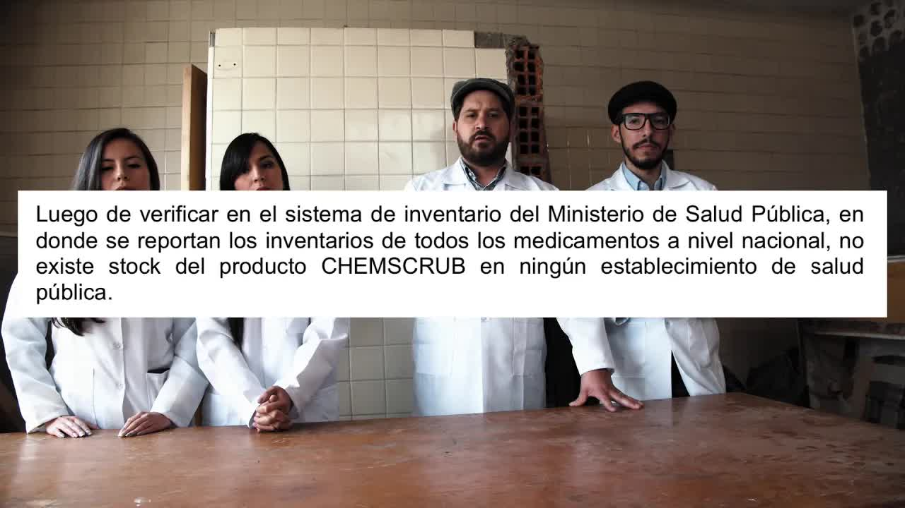
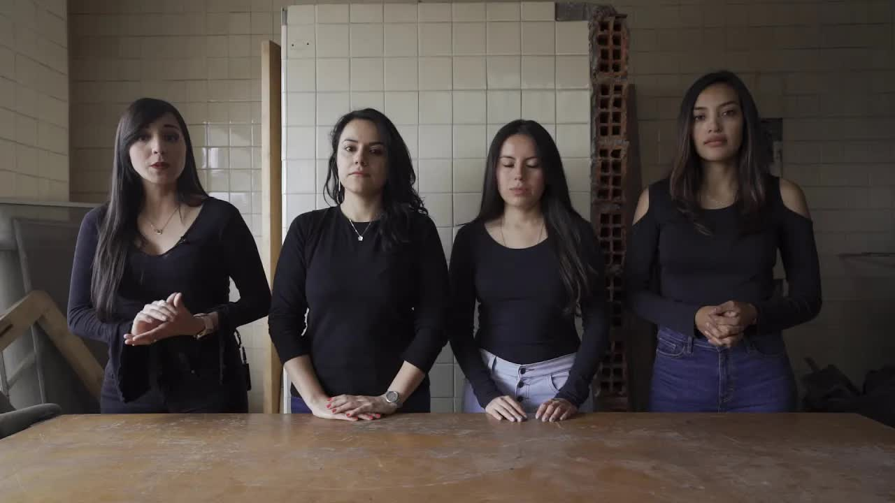
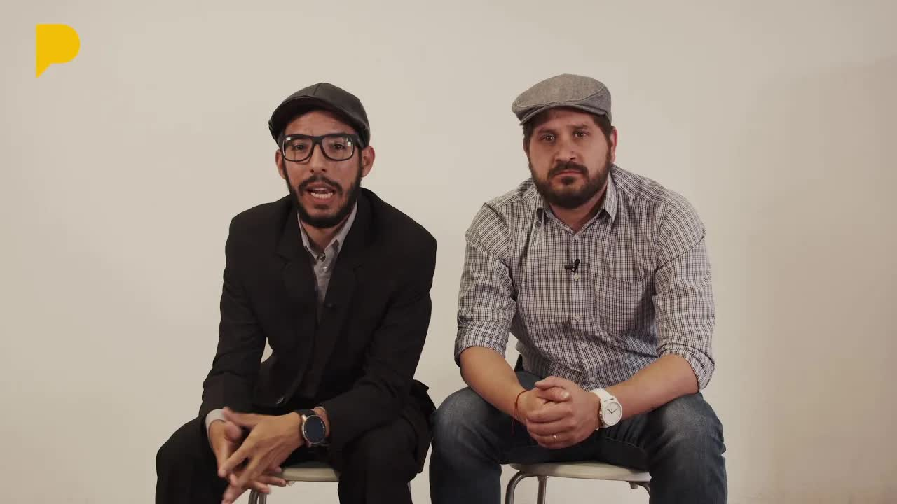

HIV kits
False negatives and false positives
33% of the 2017 tests did not detect the virus; the 2018 tests failed 40% of the time. The Ministry returned some and kept others in a warehouse without alerting anyone.
HIV tests that said no when the answer was yes. An operating-room disinfectant teeming with bacteria. Injectable paracetamol with particles floating in it. A cancer drug laboratory with dust on its machines. Babies dying in a Guayaquil hospital and a Quito maternity hospital with feces in the hallways. All of it was in reports by the Health Ministry's own regulatory agency. Nobody had made them public.

To understand this story, you need to know what Arcsa does. It is the Agency for Health Regulation and Control, the Health Ministry office that checks that the medicines and supplies entering hospitals work and do no harm. When it finds a bad product, the law requires it to issue a public alert. Between 2017 and 2019 Arcsa found several, and the Ministry put the reports in a drawer. An internal source handed them to La Posta.

The first video came out on May 7, 2019, nine and a half minutes long. Since 2017 the Ministry had been buying fourth-generation rapid HIV test kits through special-regime tenders, with no open bidding, for about three million dollars. They are tests similar to pregnancy tests: a drop of blood, a reagent, a result in minutes. In October 2017 an internal memo reported false negatives in Los Ríos, Bolívar, Santa Elena and Guayas: patients who already had the virus were getting a clean result. Arcsa's laboratory confirmed it: 33 percent of the tests did not clearly identify HIV. The Ministry returned the batch to the Korean supplier and said nothing. The report recommended running confirmatory tests. The source who signed it also had doubts about the storage and transport handled by the Ministry, in uncertified warehouses; the Korean product had no Ecuadorian health registration.
In 2018 it bought again, with international funds and through an intermediary agency. A 1.6-million contract, signed by the minister herself, for 87,000 kits made in Japan; in 2017 and 2018 some 36,000 tests a year were bought for about one and a half million each time, while HIV cases rose 15 percent. This time the Ministry tested them before distributing them, and the result was worse: 26.6 percent false negatives and 20 percent false positives. People with HIV were told they did not have it, and healthy people were told they did. A Rutgers University researcher consulted by La Posta said a test with a 5 percent error rate would not be allowed to circulate in the United States or Europe; here the error rate was almost seven times higher. The report, ready in October 2018, recommended not using them. According to the person who signed it, the Ministry asked Arcsa, behind closed doors and verbally, to revise it so the tests could leave the warehouse, and seven months later someone from the Ministry called the head of the laboratories to ask her to add a couple of lines that would clear the way for distribution. Asked about it, the Ministry replied in writing that the 1.6 million in tests was still in the warehouse.
It is not true. People must trust a global strategy, which is early screening.
Verónica Espinosa, health minister, May 7, 2019
The minister replied the same day with a two-word denial: not true. The Ministry said the tests were certified by the World Health Organization, that Arcsa had run checks with certified plasma and that UNAIDS backed them. That third report, which whitewashed the matter, was issued on April 15, 2019, six days after La Posta asked questions, and it was signed by the same person who signed the first two; the minister could not say who paid for the certified plasma. A week later, on May 14, Espinosa came to Café la Posta to answer in person for an hour. The second installment had come out the day before.
The second installment was about a disinfectant. Chemscrub was used in operating rooms and emergency departments to clean the skin before surgery or wound care. On November 17, 2017, the Health Ministry reported, in memo 2910, an outbreak of respiratory infections at the Military Hospital in Quito that doctors attributed to the disinfectant. Arcsa analyzed it: the microorganism count was too numerous to count, with Achromobacter denitrificans and Comamonas testosteroni, identified thanks to a researcher at INSPI, the national public health research institute. The bacterial load was a thousand times higher than allowed. Three months passed between the hospital's warning and the resolution that pulled it. The product was contaminated at the factory, on the road to Daule, a plant certified for good manufacturing practices; there were two versions, at 4 and 2 percent, and the second did not even have a health registration. The Ministry said only four patients were infected and none died. As for the other hospitals, it replied that the product was no longer in stock. The penalty: a temporary suspension of the registration and withdrawal of the operating permit; no internal or criminal investigation.

The third was paracetamol. In 2016 the state bought injectable paracetamol, 10 milligrams per milliliter, from an Indian supplier for 355,000 dollars, through a reverse auction, the mechanism that requires choosing the cheapest option. On April 28, 2017, the San Francisco hospital in Quito reported foreign particles inside the vial. A nurse refused to administer it. On May 22 Arcsa provisionally suspended the batch, and on June 6, 2017, it declared it unstable: it did not meet sterility standards. Even so, four months later the Military Hospital found it again. La Posta documented that it reached eight hospitals: Abel Gilbert in Guayaquil, Luis Dávila in Tulcán, the Isidro Ayora maternity hospital in Quito, the IESS's José Carrasco Arteaga in Cuenca, the basic hospitals in Guaranda and Quevedo, San Francisco in Quito and the Military Hospital; four report directly to the Ministry. There was no public alert. Only on July 6, 2018, was the distributor Farmédica asked to recall and destroy the product; its health registration was returned in March 2019.
False negatives and false positives
33% of the 2017 tests did not detect the virus; the 2018 tests failed 40% of the time. The Ministry returned some and kept others in a warehouse without alerting anyone.
An antibacterial full of bacteria
Chemscrub, used before surgery and wound care, had 100,000 colony-forming units per milliliter. The standard allows 100. It left the factory, on the road to Daule, that way.
Particles in an injectable vial
Bought in 2016 for 355,000 dollars from an Indian supplier. A nurse at the San Francisco hospital refused to administer it. Arcsa declared it unstable in June 2017. It reached eight hospitals.
Cancer drugs made amid dust
The Jaime Gutiérrez laboratory made cancer drugs with dirty machines, no cleaning logs and no separation of production lines. Three inspections later, Arcsa declared it exemplary. It sold 8 million to the state.
Babies dying in dirty hospitals
46 preventable newborn deaths in 18 weeks of 2018 at the Hospital Universitario in Guayaquil. At the Isidro Ayora maternity hospital in Quito: feces in the hallways, cats next to biological waste, loose gas cylinders, ceilings about to collapse.
Reconstruction based on the five Arcsa reports published by La Posta.
The fourth was a laboratory. Jaime José Gerardo Gutiérrez González made cancer drugs, hydroxyurea and imatinib, which are sold to the state through a distributor in which he himself has been a shareholder and manager. In June 2017 Arcsa inspectors found dust in the capsule-filling machine, dirty air vents, poorly handled waste and no cleaning logs. The laboratory said it had lost them. It requested a reinspection, which the regulations do not allow when there are serious irregularities: in October the logs reappeared and the dust disappeared. In January 2018, on the third visit, Arcsa declared it exemplary. In 2016 the state had bought eight million dollars' worth of medicines from it, through reverse auctions in ten procurement processes, more than three million in those two drugs alone, which kept circulating despite the 2017 inspections.
The fifth was the hardest. Newborn deaths in Ecuador had fallen between 1990 and 2014, and had been rising since: from 1,554 in 2014 to 1,859 in 2017, from 4.6 to 5.6 per thousand live births. At the Hospital Universitario in Guayaquil, an internal report counted 46 preventable newborn deaths between weeks 1 and 18 of 2018, 76 percent of them in the first eight days of life, compared with 71 in the whole previous year. A La Posta team, Ana Gabriela Oquendo, Mónica Velásquez and Gabriel Andrade, went undercover into the Isidro Ayora maternity hospital in Quito and filmed what a March 2018 technical report had already described: structures about to collapse, operating-room ventilation open to the elements, rusted boilers whose pollution contaminates linens that should come out sterilized, feces on the terrace, stray cats that staff fed and that bit employees next to the placentas, a kitchen tank that had exploded, gas cylinders without chains, an auditorium turned into a clothing store. The Ministry did not respond.
The Ministry responded to each installment with the same logic: the documents exist, but others are to blame. It said it does not buy medicines, that they are handled by 66 hospitals and 140 district offices; La Posta replied that the technical committee that recommends each award to SERCOP includes Ministry members, under Article 68 of the procurement regulations. It said it had issued a suspension resolution; La Posta showed there was none on Arcsa's alerts page. It cited the replacement clause in the framework agreements, but did not say whether the state recovered the money for the contaminated paracetamol. On May 21 La Posta published the Ministry's written answers, which had arrived late, and responded point by point.

On May 23, 2019, the piece that held the series together came out: fifty-five minutes with the source. David Salomón, a biotechnology process engineer trained in Germany and technical director of Arcsa's reference laboratory, had signed the HIV, disinfectant and paracetamol reports by hand. He spoke on camera. He explained how purchases were made, how products were tested and how things were hushed up; that the minister's press conference was coordinated, and that he gave his statement to GK under pressure, in front of his superiors. He said that after the first installments someone slashed one of his tires with a knife, and that he feared they would send a guy on a motorbike to his house. If that makes me a snitch, he said, then I'm the mother of all snitches. He became a protected source of the Attorney General's Office. On June 4, along with the fifth installment, La Posta published the complaint of Rosario Albán, an employee of the Isidro Ayora maternity hospital since 1985: she had written to the minister in May 2018, to President Moreno in June 2018 and April 2019, and to Attorney General Salazar on April 15, 2019, reporting irregularities and a rape by the maternity hospital's manager, her boss, with whom she still worked door to door.

We regret to tell you that you are the one most affected. Yes: there are ministries that steal and there are ministries that kill.
La Posta, first installment, May 7, 2019
The minister agreed to come on Café La Posta to answer questions. She defended the four quality control reports: rapid tests are not diagnostic, the first reports were done without the right reagent, a patient on treatment tests negative, the supplier is the UN Population Fund and not just any contractor, and now we know the tests worked perfectly. She argued that the Attorney General's Office was not investigating a personal act but the work of an entire institution, and that if they wanted someone responsible, they could pin it on her: I am not the ministry, the ministry is 47,000 professionals. Boscán closed: I hope you stay in office until justice comes knocking at your door. A week later President Moreno kept her in the post. Three months later the National Assembly censured her.
Three days after the first installment, the Comptroller General's Office opened a special audit of the Ministry and the Attorney General's Office opened a preliminary investigation into the HIV tests; in June 2019 the Attorney General's Office raided three Ministry and Arcsa sites and seized fourth-generation kits of the Standard Diagnostics and Alere brands. Espinosa left the post that same month; the government thanked her for her service, although she herself later said on the Assembly floor that she had been dismissed. Independent assembly member Mae Montaño gathered 35 signatures for an impeachment trial for dereliction of duty: purchases of spoiled medicines and supplies, misuse of public funds, allegedly fraudulent contracts, and maneuvers to avoid updating the essential medicines list.
On July 17 the Oversight Committee voted 13 to 0 to recommend censure. It accepted the grounds concerning the HIV kits and Arcsa's contradictory reports; it found no merit in the paracetamol or the disinfectant. On August 13 the full Assembly voted: 89 in favor, with 21 absent. It was two votes short of the 91 needed. Montaño explained the next day on Café la Posta who saved the minister that night: assembly members who had signed the request and did not vote, a bloc that offered its votes and did not cast them, surprise absences, an Assembly president, César Litardo, who froze the report for weeks and called recesses so more legislators could come in, and Minister María Paula Romo lobbying right in front of him. On the floor, the former minister said the trial was based on five lies by irresponsible journalists and that she had 14,000 news stories backing her record. Montaño requested reconsideration. The next day, August 14, 92 of 120 assembly members censured the former minister: two years barred from public office and the case file sent to the Comptroller General's Office and the Attorney General's Office.
Weeks later, Humberto Navas López, manager of the Isidro Ayora maternity hospital, whom Rosario Albán had accused of rape in the series, filed a criminal complaint against much of the La Posta team for disclosing a secret, on Ministry letterhead. It did not say the report was false; it said the physical document had gone missing. The team was summoned to testify. Nothing came of it.
In February 2020, five months after the censure, Primicias looked into what had happened to the criminal investigations in the health sector: nothing. The preliminary investigation into the HIV tests, opened in June 2019, remained confidential, with no defendants or charges. The 15 reports with signs of criminal liability that the Comptroller General's Office sent to the Attorney General's Office that year had not moved past that stage either. The results of the forensic analysis of the seized kits were never made public.

The Comptroller General's Office did reach a conclusion: it assigned administrative liability to Espinosa and her predecessor, Margarita Guevara, for failing to issue the rules governing health controls on imported medical devices. In an official response from July 2018, the nine zonal coordination offices reported 55 problem kits out of 893,732 used, a figure very different from the one produced by Arcsa's laboratories.
Verónica Espinosa never returned to public service. Her case became a reference point for what came next: the 2020 pandemic found the same procurement and control system in place, and in 2021 the VIP vaccinations scandal brought down two more health ministers. Nobody has faced criminal charges over the kits, the disinfectant, the paracetamol or the laboratory.
Updated September 5, 2026
The San Francisco hospital in Quito reports particles in the vial. Arcsa declares it unstable on June 6.
Arcsa's first inspection of the Gutiérrez laboratory: dust, dirty pipes, no logs.
An internal memo reports false negatives in four provinces. 33% of the tests fail to detect HIV.
The Ministry reports an outbreak at the Military Hospital. Arcsa takes three months to pull Chemscrub.
The new HIV tests fail 40% of the time. The report recommends not using them.
La Posta publishes the HIV kits story. The minister responds: it is not true.
A special audit and a preliminary investigation, three days after the first installment.
An hour-long interview. The second installment had come out the day before.
The president confirms the minister in her post. A month later she is out.
A 55-minute interview with the official who signed the reports.
Newborns at risk. That day the Attorney General's Office raids Ministry and Arcsa warehouses.
The government thanks her for her service.
13 votes to 0 to recommend censure.
89 votes on the first day, two short of censure; 92 on reconsideration. Two years barred from office.
Primicias: the preliminary investigation remains confidential, with no defendants.
No charges are on record in any of the five cases.
Health minister from January 2017 to June 2019. She signed the 1.6-million contract for the 2018 kits.
Director of Arcsa. His inspectors documented the defects; his agency did not issue the alerts.
Technical director of Arcsa's reference laboratory. He signed the HIV, disinfectant and paracetamol reports and spoke on camera on May 23, 2019.
Independent assembly member. She gathered the 35 signatures and requested the reconsideration that censured Espinosa.
Distributor of the contaminated paracetamol and manufacturer of the infected disinfectant.
Employee of the Isidro Ayora maternity hospital since 1985. She reported irregularities and a rape by her boss to the minister, the president and the attorney general.
Manager of the Isidro Ayora maternity hospital. Accused by Albán; filed a criminal complaint against La Posta.
Photos via Wikimedia Commons. Verónica Espinosa: https://www.flickr.com/photos/agenciaandes_ec/ (CC BY-SA 2.0); Mae Montaño: Fotografía por: Alexander Moya / Asamblea Nacional (CC BY-SA 2.0).
"It is not true. People must trust a global strategy, which is early screening" (May 7, 2019).
Rapid tests are not diagnostic; the first reports were done without the right reagent; the supplier is the UN Population Fund; now we know the tests worked perfectly. If you want someone responsible, pin it on me.
It maintained that the rapid tests are certified by the WHO and its Prequalification Programme, that Arcsa carried out quality controls with certified plasma and that UNAIDS backed the tests.
It accepted the grounds concerning the HIV kits and Arcsa's "inconclusive and contradictory" reports. It found no merit in the grounds concerning the paracetamol or the Chemscrub disinfectant.
The trial is based on five lies by irresponsible media outlets and journalists; she has 14,000 news stories backing her work.



for him welcome we were waiting we have worrying news very worrying news you had better take a seat an investigation by la post has detected catastrophic failures in the health system and we regret to tell you that you the one most affected yes there are ministries that steal and there are ministries that kill for three months we have reviewed cases of negligence at the ministry of health decisions that are costing…
Read the full transcripthey welcome we weren't waiting benguela see well not so simple it's the drop of blood of blood this is a wound without more clean if not clean it could get infected it can also get infected if I clean it like cotton like if it's full of crap that as you see abounded and our ministry if it is not treated as it is of a small wound I would be very disapproved in that cotton there must be dozens of acro bact…
Read the full transcripthello the ministry of death has complained that we call it criterion of death and the ministry has complained that we use a lab coat it has tried to divert attention saying that we are referring to the doctors it is their noble work but we are not referring to the ministry and its administrative decisions we refer especially to the minister the minister of death but out of respect for the doctors days their noble wor…
Read the full transcriptat la posta we published our third installment of the ministry of death this time it was about the contaminated injectable paracetamol before the publication we did the respective investigations and consulted the ministry of health to be able to include its version but its response arrived late but no we will not leave them out and we want to make public their answers which as usual were evasive and of…
Read the full transcriptsaga of investigations the ministry of death in which a person driven by the interest of improving our health system dares to take one more step to denounce and tell the reality of the system in which we live this exclusive interview by la posta with the public official from the ministry of death will be a new opportunity for the discourse of corruption to move like a vague discourse or a discourse…
Read the full transcript2017 to an inspection to verify compliance with the good manufacturing practices certification but good practices was not exactly what was found at this producer of cancer drugs that circulated in the public health system with the blessing of the minister of death verónica espinoza common sense knowing that the gmp and in any pharmaceutical laboratory is fundamental on that dep…
Read the full transcriptcame for your monthly checkup come on let's see how your baby is doing but surely everything will be fine what is not fine is the public health system which not only affects you but your baby in this new report of the ministry of death the series of investigations by la posta we tell you that unsanitary conditions may be one of the causes for the increase in newborn deaths welcome the …
Read the full transcriptfor me it has been torment to work there I have no life and believe me for me going to work is the most painful thing every day I have to go and shut myself in because one no longer has motivation hello everyone I am anderson boscán and this is a special installment of the ministry of death this is the the second exclusive interview that la posta presents with an official of the public health network last time…
Read the full transcriptmeans his vocation if the second one happens with chances is guillermo reads the movement adds a candidate who actually responds to open social christian support in the national assembly the third with fewer chances is assembly member jimmy candel from the province of santa elena without major support and major reproductions but anything can happen in this session which is called for 10 in the morning final…
Read the full transcriptspecialty and the barista who opens the doors for us every morning and offers us the best coffee I invite you to come it is located on amazonas and republica avenue on the ground floor of the chambers building now friends we can move on to the hot news hot off the press the comptroller's office decided to open a special audit against the ministry of health and its minister verónica espinoza to which was added an investigatio…
Read the full transcriptis the sponsor of the month an ecuadorian brand from guayaquil madera de guerrero a men's clothing store with a totally different proposal to the indie garment the day is this little jacket I'm wearing this morning and having fulfilled the contracts let's go with the review of what happened yesterday to get into the interview 89 votes in favor achieved the censure request by mayo montaño against the minister former minister now several veróni…
Read the full transcriptif you thought the ministry of death scandal had ended with the political censure of former minister verónica espinoza we regret to tell you that is not the case in fact we are the ones who regret it most humberto navas lópez manager of the isidro ayora maternity hospital in quito has filed a criminal complaint against a large part of the la posta team on letterhead of the ministry of health the offici…
Read the full transcriptTranscripts from each show's automatic captions. They have not been corrected by hand: use them to find a phrase and jump to the exact minute in the video, not as verbatim quotes.
The political precedent stuck. The criminal one did not: the Attorney General's Office never filed charges.
The pandemic and the VIP vaccinations brought down two more ministers. Procurement and health controls did not change.
The videos are hosted on this site so the series does not depend on third-party channels. The originals were published on La Posta's channel.